01Мета і план
Мета
Опанувати технологію мікроклонального розмноження (вегетативного розмноження в пробірці): вичленовувати апікальні меристеми, оздоровлювати рослини від вірусів, розмножувати їх мікроживцями, отримувати мікробульби картоплі, укорінювати й адаптувати регенеранти до ґрунту, вести облік їх росту.
Обладнання й матеріали
- ламінар-бокс, бінокулярна лупа, ланцети, препарувальні голки, пінцети, спиртівка;
- пробірки, колби, чашки Петрі з середовищем Мурасіге — Скуга (МС);
- термокамера, кювети з піском, субстрат торф : пісок : перліт;
- паростки картоплі, рослини гвоздики, гербери, цукрового буряку.
Що дізнаєтеся
- чому верхівка пагона вільна від вірусів і як розмір експлантата впливає на оздоровлення;
- як рахувати коефіцієнт розмноження й прогноз кількості рослин (геометрична прогресія);
- що спонукає картоплю утворювати мікробульби;
- чому пробіркові рослини в’януть у ґрунті і як їх загартувати.
02Теоретичні відомості
Суть методу
Мікроклональне розмноження — отримання in vitro (у пробірці, на штучному живильному середовищі) нестатевим шляхом рослин, генетично ідентичних вихідній. Сукупність таких нащадків однієї рослини називають клоном. Метод ґрунтується на тотипотентності — здатності рослинної клітини під дією зовнішніх чинників (передусім фітогормонів, див. Конспект: ріст і розвиток, фітогормони) дати початок цілій рослині.
Порівняно зі звичайним живцюванням метод має переваги: генетично однорідний і безвірусний посадковий матеріал; дуже високий коефіцієнт розмноження (кількість рослин, що їх отримують з одного експлантата за певний час) — 105–106 на рік для трав’янистих і квіткових рослин, 104–105 для кущових і деревних, близько 104 для хвойних; скорочення селекційного процесу; розмноження рослин, що не дають життєздатного насіння; роботу цілий рік на малій площі й можливість автоматизації.
Перші рослини-регенеранти (рослини, відтворені з ізольованих тканин) орхідей отримав наприкінці 1950-х рр. французький учений Ж. Морель, культивуючи апікальну меристему. У колишньому СРСР роботи почалися в 1960-х рр. в Інституті фізіології рослин ім. К. А. Тімірязєва під керівництвом Р. Г. Бутенко: розроблено технології для картоплі, цукрового буряку, гвоздики, гербери, фрезії.
Чотири етапи
- Введення в культурурослина-донор, експлантат, стерилізація; меристема 0,1–1 мм
- Мікророзмноженнямікроживцювання або цитокініни → пазушні пагони; пасаж кожні 14–21 доба, N = N₀·Kⁿ
- Укорінення й адаптаціяауксин, ½ МС, затемнення; субстрат, укриття, туман; депонування при +2…+10 °C
- Теплиця → поледорощування, підживлення розчинами МС чи Кнудсона, висаджування в ґрунт

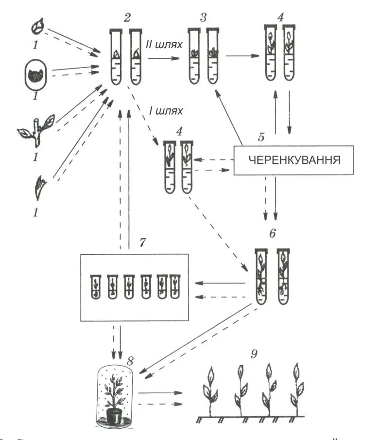

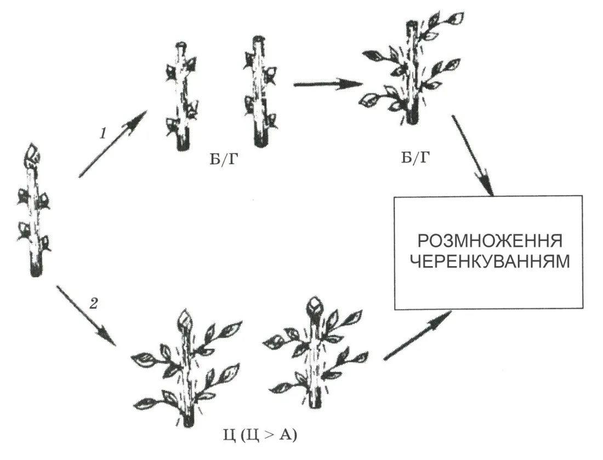
На схемі рис. 15 «Б/Г» означає безгормональне середовище, «Ц» — середовище з цитокінінами (Ц > А — цитокінінів більше, ніж ауксинів). Шлях 1 — видалення верхівкової меристеми й мікроживцювання на безгормональному середовищі; шлях 2 — цитокініни пробуджують пазушні бруньки.
Способи мікророзмноження
- Активування наявних меристем (верхівки стебла, пазушних і сплячих бруньок) — основний метод. Ґрунтується на знятті апікального домінування (пригнічення бічних бруньок верхівкою через ауксин, що йде з неї): або видаляють верхівку й живцюють пагін на безгормональному середовищі, або додають цитокініни — 6-бензиламінопурин (6-БАП), кінетин (6-фурфуриламінопурин), 2-ізопентеніладенін, зеатин. Так з однієї меристеми картоплі отримують понад 105 рослин на рік.
- Індукція адвентивних бруньок (додаткових, що виникають не в пазухах листків, а прямо на тканинах експлантата: листках, лусках і денці цибулин, гіпокотилі, сім’ядолях) — на середовищі з цитокініном або цитокініном з ауксином (ІОК — індоліл-3-оцтова кислота, НОК — α-нафтилоцтова кислота) у співвідношенні 10 : 1 чи 100 : 1. Так розмножують цибулинні квіти, капусту, глоксинію, фіалки.
- Соматичний ембріогенез — утворення із соматичних (нестатевих) клітин зародкоподібних ембріоїдів з полюсами пагона й кореня. Дві стадії: ауксин (зазвичай 2,4-Д — 2,4-дихлорфеноксиоцтова кислота) робить клітини ембріогенними, потім ауксин зменшують чи прибирають. Ембріоїди можна капсулювати в «штучне насіння».
- Адвентивні бруньки в калюсі (неорганізованій масі клітин). Застосовують обмежено: за тривалого пасажування калюсу змінюється плоїдність (кількість наборів хромосом), виникають хромосомні перебудови й мутації — сомаклональна мінливість. Тому період неорганізованого росту має бути мінімальним (див. тему 2, тему 4).
Апікальна меристема й оздоровлення від вірусів
Апікальна меристема — твірна тканина верхівки пагона: конус наростання (купол з клітин, що активно діляться) з одним-двома листковими примордіями (зачатками листків). Сам купол дуже малий — близько 80 мкм завдовжки (у посібнику на с. 115 надруковано «80 мм» — це помилка друку). Будову клітин меристеми розглянуто в Конспекті: рослинна клітина.
Ще 1943 р. Ф. Уайт припустив, що меристема може бути вільною від вірусів; у 1950-х з точок росту отримали безвірусні жоржини. Пояснення: вірус поширюється рослиною повільніше, ніж ростуть молоді органи. У меристемі ще немає провідних тканин — флоеми (тканини, що проводить органічні речовини й разом з ними — віруси); вірус проникає лише повільно, через плазмодесми (цитоплазматичні канальці між клітинами). Тому чим менший вичленений шматочок, тим вища ймовірність, що він безвірусний, — але тим гірше він приживається.

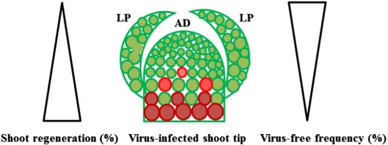

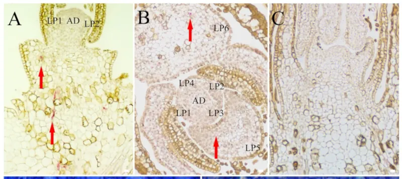
Зона, вільна від вірусів, залежить від виду, сорту й вірусу. На меристемах картоплі розміром 200 мкм лише 10 % рослин виявилися вільними від X-вірусу, тоді як Y-вірусом було уражено 70 % (с. 111); з меристем гвоздики й цимбідіуму, уражених вірусами CarMV (вірус крапчастості гвоздики) і CarVMV (вірус крапчастості жилок гвоздики), теж отримували інфіковані мериклони (рослини з меристеми). У моделі ймовірність безвірусності описано функцією
L — довжина експлантата від верхівки купола до зрізу, мкм; λ — «глибина» безвірусної зони; λ0 підібрано так, щоб за L = 200 мкм отримати 10 % вільних від X-вірусу (λ0 = 200/√ln 10 ≈ 132 мкм) і 30 % вільних від Y-вірусу (λ0 ≈ 182 мкм); dеф — ефективна тривалість термотерапії (доби при +37 °C); C — концентрація вірозолу, мг/л. Приживлюваність зростає з розміром: Pрег = 1 − e−(L/λр)², λр ≈ 200–220 мкм. Добуток Y = Pвф·Pрег має максимум — звідси рекомендований розмір 100–250 мкм з 1–2 примордіями (ЛР 27). Це навчальне наближення, що відтворює числа посібника; модель — вкладка 1.

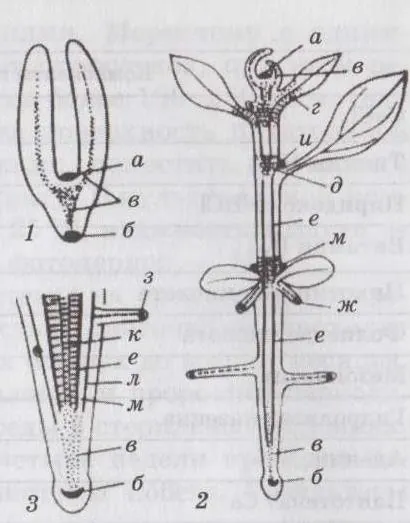

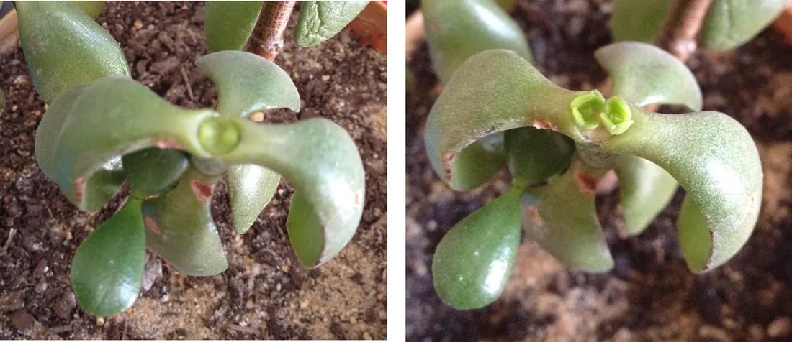
Рис. 15 посібника показує розташування меристем у рослині: 1 — у зародку насіння, 2 — у пророщеній рослині (а — верхівкова меристема пагона, и — меристема пазушної бруньки, д — інтеркалярна, е — камбій), 3 — на кінці кореня (б — верхівкова меристема кореня).
Термотерапія і хіміотерапія
Щоб отримати безвірусну меристему від сильно уражених рослин, донорів спершу обробляють теплом або хімічно. Термотерапія — витримування рослин у сухому гарячому повітрі. Одна гіпотеза: висока температура руйнує РНК і білкову оболонку вірусних частинок; друга: вона зсуває рівновагу між синтезом і розпадом вірусу в клітинах рослини на користь розпаду. Рослини ставлять у термокамеру і протягом першого тижня піднімають температуру від +25 до +37 °C — щодоби на 2 °C; далі тримають +37 °C, 5000 лк, фотоперіод 14–16 год, відносну вологість 90 %. Тривалість залежить від вірусу. Бульби картоплі пророщують у кюветах з піском 1–2 тижні при +28…+30 °C, потім 4 тижні при +37…+38 °C (ЛР 28). Тривала термотерапія пригнічує ріст цибулинних, цимбідіуму, троянд — для них її проводять уже in vitro. Термотерапія також підвищує коефіцієнт розмноження на 50–60 % і полегшує адаптацію регенерантів.
Хіміотерапія — додавання в середовище аналога гуанозину вірозолу (рибавірину; 1-β-D-рибофуранозил-1,2,4-триазол-3-карбоксамід) у концентрації 20–50 мг/л: частка безвірусних меристем зростає до 80–100 %. Обидва способи дорогі, тому дедалі частіше створюють генетично стійкі до вірусів форми.
Регенеранти обов’язково перевіряють на віруси: імуноферментним аналізом (ІФА, англ. ELISA — виявлення вірусного білка антитілами, позначеними ферментом; позитивна лунка жовтіє), електронною мікроскопією та на рослинах-індикаторах (видах, що дають чіткі симптоми на ураження).

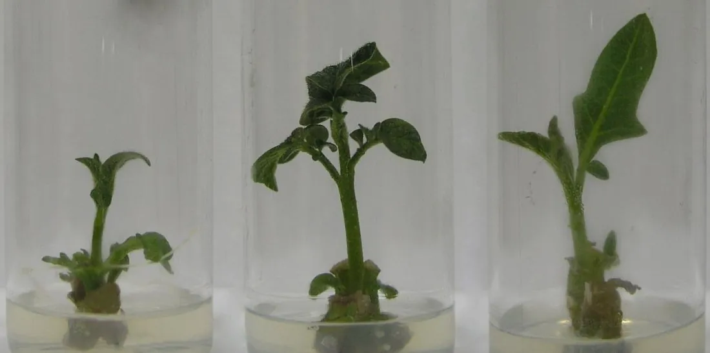

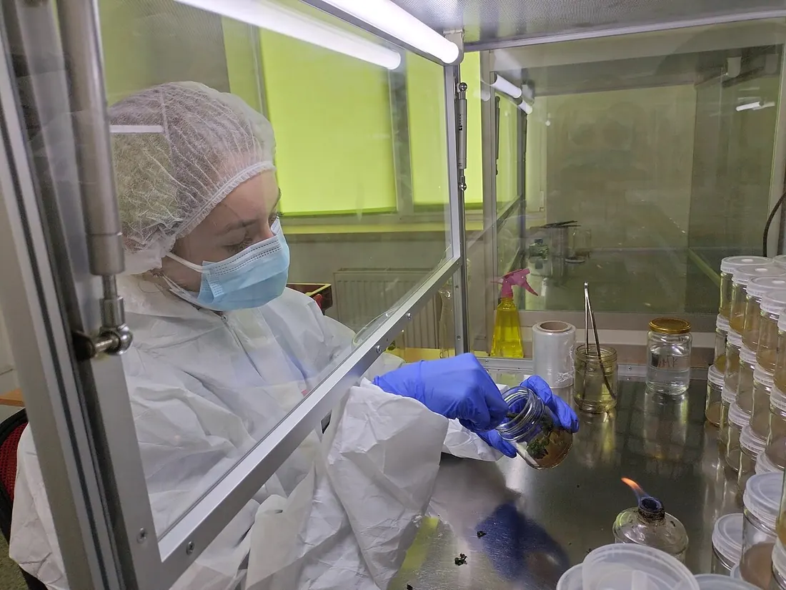
Від чого залежить успіх
- Рослина-донор: здорова, без грибних, бактеріальних і вірусних хвороб, у стані інтенсивного росту (після виходу зі спокою).
- Експлантат: молоді, слабко диференційовані тканини; від ювенільних (молодих, ще не здатних цвісти) рослин експлантати укорінюються значно краще, особливо в деревних порід. За кількох пасажів пагони набувають ознак ювенільності.
- Стерилізація: стерилянт підбирають до ніжності тканин; внутрішню інфекцію пригнічують фунгіцидами й антибіотиками (див. тему 1).
- Середовище: регулятори росту, вітаміни, вуглеводи, мінеральні солі — склад і консистенцію підбирають для кожного виду.
- Фізичні умови: на 1–2 етапах 1000–3000 лк, фотоперіод 14–16 год, вологість 65–70 %, +22…+26 °C удень і +18…+22 °C уночі. Надто яскраве світло спричиняє хлороз (пожовтіння через нестачу хлорофілу), проте такі рослини краще приживаються в ґрунті.
Мікроживцювання і коефіцієнт розмноження
Живцювання регенерантів знімає апікальне домінування й пробуджує пазушні меристеми: з кожного мікроживця (відрізка пагона 3–5 мм з однією пазушною брунькою в гвоздики чи двома — у картоплі) виростає новий пагін. Наступне живцювання — через 14–21 добу, з однієї рослини — 5–8 живців (ЛР 30). Якщо всі живці знову йдуть у розмноження, кількість рослин після n пасажів зростає як геометрична прогресія:
N0 — вихідна кількість рослин; k — живців з рослини; q — частка втрат (інфікування, загибель); τ — інтервал між живцюваннями, діб; t0 — час отримання першої рослини з меристеми (30–45 діб); ⌊ ⌋ — ціла частина. Кількість пасажів, потрібна для N* рослин: n* = ⌈lg(N*/N0)/lg K⌉. Приклад: k = 5 без втрат, τ = 21 доба: за 7 пасажів (≈ 150 діб) — 57 = 78 125 рослин.
На практиці частку p живців залишають маточним фондом, решту (1 − p) відправляють на укорінення. Тоді маточний фонд росте як (pK)n, а кількість живців, відданих на укорінення, — це сума геометричної прогресії:
За p = 1 формула переходить у N = N0·Kn. Теоретичний результат за рік (108–1011) значно перевищує реальні 105–106: кількість обмежують праця лаборантів, площа культуральних кімнат і посуд. Модель — вкладка 2.
Прискорене мікророзмноження (ЛР 32): бруньки культивують у колбах Ерленмейєра в 5 мл рідкого середовища МС з 4–6 мг/л БАП 2–3 тижні — знімається апікальне домінування й починається проліферація (швидке розростання) адвентивних бруньок; потім БАП знижують до 2 мг/л і пересаджують кожні 2 тижні; сформовані пагони укорінюють на твердому МС з 0,1–0,2 мг/л ІОК. Надлишок цитокініну спричиняє гіпергідричність (скловидність — оводнені, крихкі пагони, що не укорінюються).

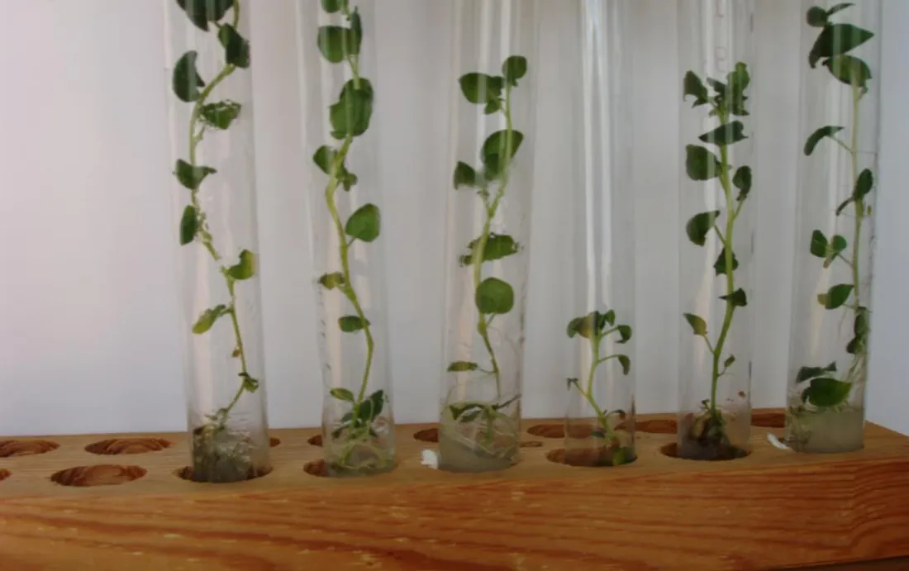

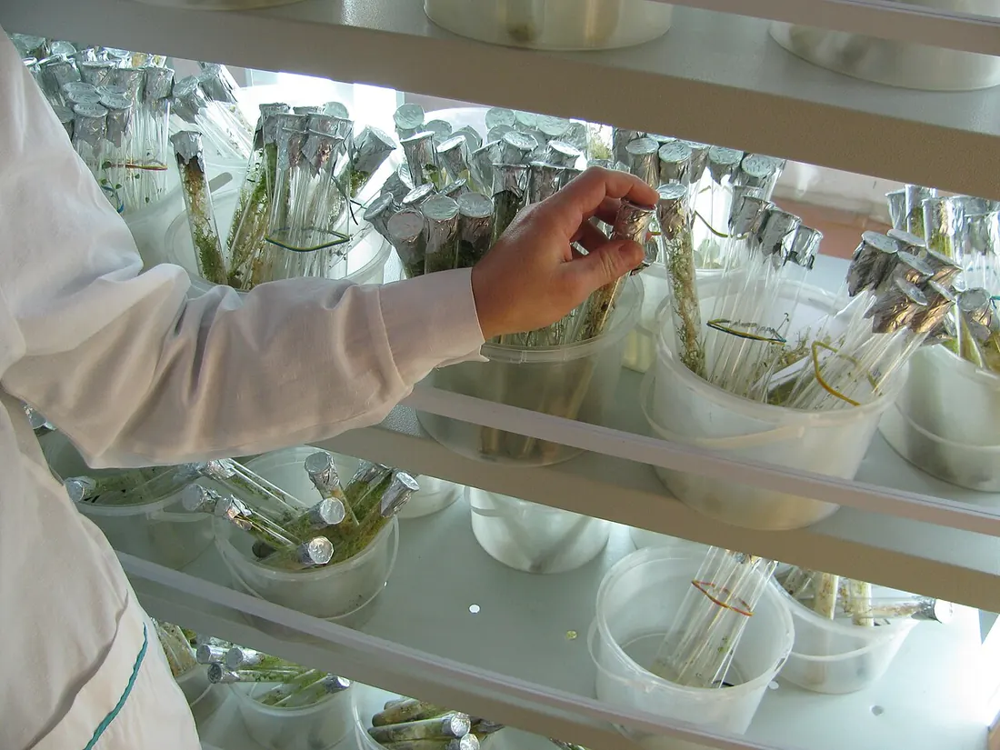

Мікробульби картоплі
Мікробульби — дрібні (3–10 мм) бульбочки, що утворюються in vitro; це цінний безвірусний насіннєвий матеріал, зручний для зберігання й перевезення. Їх індукують середовищем з високим вмістом солей МС, вуглеводів (сахарози — до 8 %), цитокінінів, абсцизової кислоти (гормону спокою). Перші 10–12 діб живці ростуть при 16-годинному дні, 3–5 тис. лк, +25 °C удень і +19–20 °C уночі, далі — при 12-годинному дні; іноді після довгого дня пробірки переносять у камеру з +10 °C. Бульби з’являються приблизно через місяць, увесь цикл — 60–65 діб. Мікробульби зберігають по 10 шт. у стерильних пробірках при +5 °C і вологості 95 % до 6 місяців — це імітує період спокою й покращує схожість. Короткий день, прохолодні ночі й багато сахарози — ті самі сигнали, що й восени в полі. Модель — вкладка 3 (залежність від сахарози й фотоперіоду — наближення за загальними закономірностями).

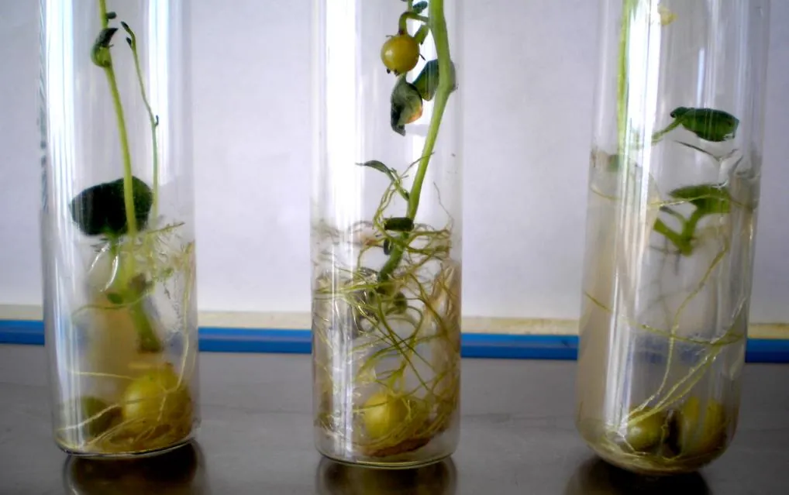

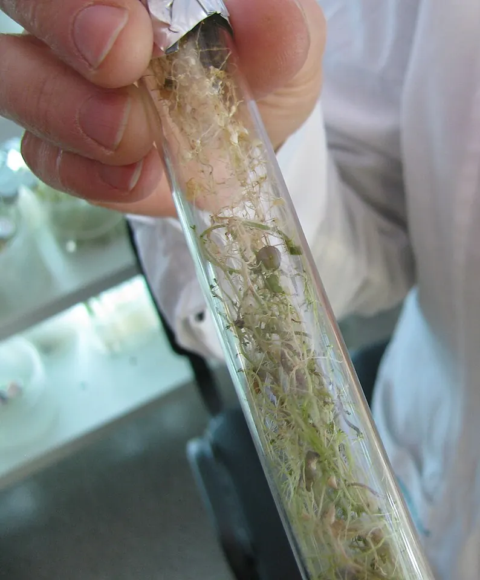
Укорінення
Ризогенез (утворення коренів) стимулюють: 1) невеликою кількістю ауксину — ІОК 0,3–1 мг/л (у посібнику поруч названо й БАП, але це цитокінін, що коренеутворення радше гальмує); 2) розведенням мінеральної основи безгормонального середовища вдвічі; 3) затемненням основи пагона — фольгою на нижній частині пробірки або активованим вугіллям у середовищі (воно ще й поглинає надлишок ауксину та шкідливі фенольні речовини), бо яскраве світло гальмує укорінення; 4) висаджуванням у нестерильний ґрунт; 5) обробкою пагонів синтетичними ауксинами. Надлишок ауксину дає калюс на основі пагона замість коренів. Модель — вкладка 4.

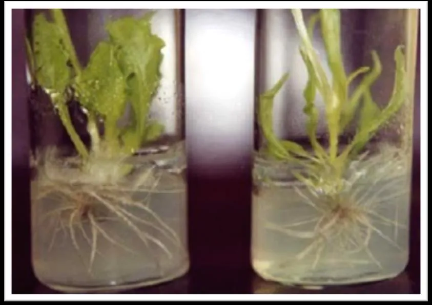
Адаптація до умов ex vitro
Пересаджування в субстрат — найдорожчий і найтрудомісткіший етап. Найкращий час — весна або початок літа. Рослини з 2–3 листками й добре розвиненими коренями виймають пінцетом, ретельно відмивають корені від агару й садять у прогрітий (+85 °C, 1–2 год) субстрат: торф : пісок (3 : 1), торф : дерновий ґрунт : перліт (1 : 1 : 1) або торф : пісок : перліт (1 : 1 : 1); для орхідей — сфагнум, торф, листя бука чи дуба, соснова кора. Умови теплиці: +20…+22 °C, не більше 5000 лк, вологість 65–90 %, штучний туман або укриття скляними банками чи плівкою, які відкривають поступово. Через 20–30 діб рослини підживлюють розчинами Кнудсона, МС, Чеснокова, Кнопа.
Чому пробіркові рослини в’януть: у вологому повітрі пробірки (майже 100 %) їхні продихи (пори в епідермісі листка, через які йде газообмін і випаровування) погано закриваються, а кутикула (восковий шар на листку) тонка; у деяких рослин in vitro немає кореневих волосків. Висихання оцінюють за дефіцитом тиску водяної пари (VPD, англ. vapour pressure deficit) — наскільки повітрю «бракує» до насичення:
T — температура, °C; RH — відносна вологість повітря, %; es — тиск насиченої пари (формула Тетенса). При +22 °C і 70 % VPD ≈ 0,8 кПа, під банкою з 98 % — лише 0,05 кПа. Втрата води листком пропорційна провідності продихів і VPD; модель вважає, що продихи «навчаються» закриватися за 1–2 тижні помірної сухості, а нові корені поступово наздоганяють випаровування (наближення; про водний дефіцит див. Конспект: стійкість до стресів). Модель — вкладка 5.
Індійські дослідники запропонували зрошувати листки весь період акліматизації 50 % водним розчином гліцерину або сумішшю парафіну чи жиру в діетиловому ефірі (1 : 1) — плівка зменшує випаровування й, за посібником, забезпечує до 100 % приживлюваності. Для мікотрофних рослин корисна штучна мікориза (симбіоз коренів із грибами, що постачають воду й мінеральні речовини).

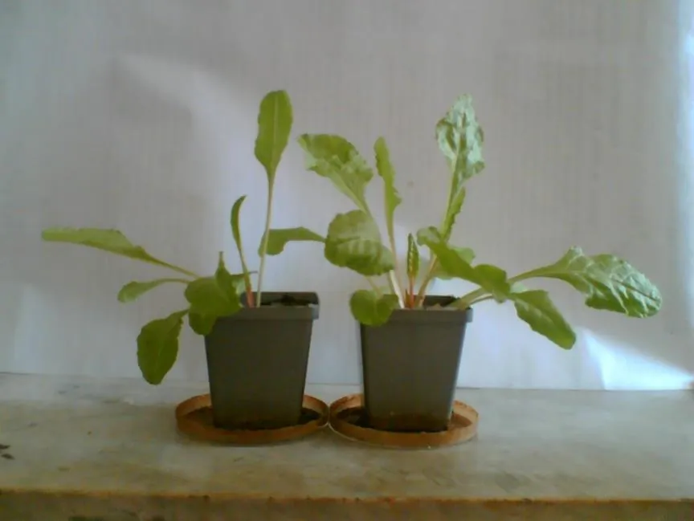

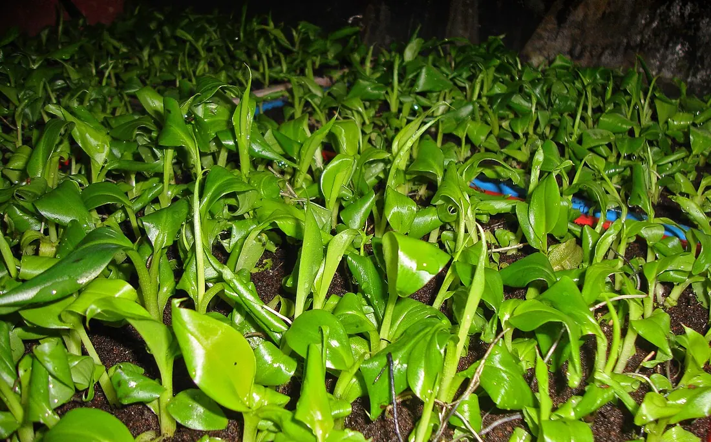
Ростові характеристики регенерантів
Для обліку (ЛР 34) визначають сиру й суху масу (наприкінці досліду або кожні 7 діб — для динаміки), кількість і довжину міжвузлів, площу листків, індекс росту й коефіцієнт розмноження:
Lt — кінцева довжина рослини, L0 — довжина вихідного експлантата; b — бруньок на один мікроживець (1 у гвоздики, 2 у картоплі). Ріст у довжину в моделі — логістична (S-подібна) крива; за слабкого світла міжвузля видовжуються (етіоляція). Перед висаджуванням рослини сортують на великі, середні й дрібні та висаджують окремими ділянками (ЛР 33). Модель — вкладка 6.

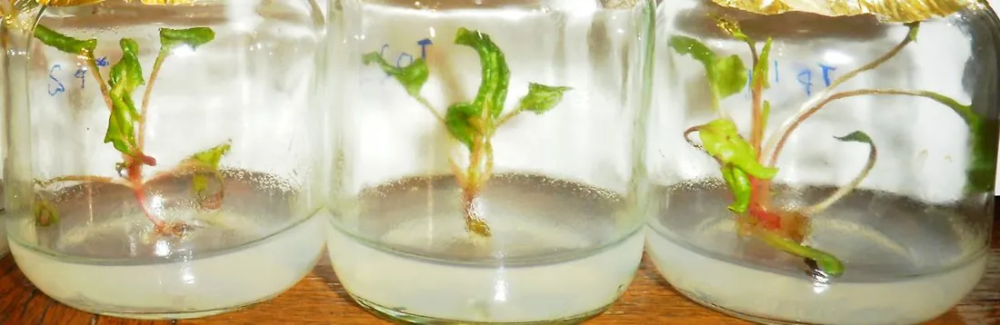
Нащадки однієї рослини, отримані нестатевим шляхом; генетично однакові.
Шматочок тканини чи органа, перенесений на живильне середовище.
Пригнічення пазушних бруньок верхівкою пагона (через ауксин); знімається живцюванням або цитокінінами.
Пересаджування культури на свіже середовище; один цикл розмноження.
Рослина, отримана з культури меристеми.
Скловидність пагонів: надмірне оводнення тканин, частіше від надлишку цитокінінів.
Зберігання регенерантів при +2…+10 °C зі сповільненим ростом.
«Поза склом» — умови ґрунту й теплиці після пробірки.
Рецептури, режими й контрольні числа моделей узято з посібника (с. 106–127); кількісні залежності, яких у посібнику немає (крива приживлюваності, вплив сахарози на масу бульб, динаміка оводненості листка), — навчальні наближення, що відтворюють описані в ньому закономірності.
03Інтерактивна модель
Шість моделей покривають усі роботи теми — від вичленування меристеми до обліку росту рослин. Змінюйте параметри: сцена, показники, графіки й висновок перераховуються одразу; кнопка «▶ Запустити» показує процес у прискореному часі. Теорію до кожної моделі подано вище, у розділі 2.
Меристема під бінокуляром: розмір, віруси, оздоровлення
Перетягніть лінію зрізу в полі зору або змінюйте довжину експлантата; додайте термо- чи хіміотерапію. «Запустити» — вичленування, 45 діб культивування й перевірка ІФА. · ЛР 26–28
Вірус і культура
Параметри
Показ
Частки за розміром експлантата
Вплив тривалості термотерапії
Позначення. Червоне тло — частка клітин з вірусом, що зростає з глибиною (як після імунного фарбування на фото вище); жовта пунктирна лінія — межа λ, вище якої безвірусних клітин понад 63 %; блакитна — лінія зрізу. ІФА — імуноферментний аналіз: жовта лунка — у рослині є вірусний білок, безбарвна — немає, хрестик — рослина загинула. «Вихід здорових» Y = Pвф·Pрег. Формули — у розділах «Апікальна меристема» і «Термо- і хіміотерапія».
Від однієї рослини до тисяч: мікроживцювання
Нарізайте рослину на мікроживці й подивіться, як росте кількість рослин за пасажами. Порівняйте звичайне живцювання з прискореним розмноженням на БАП. · ЛР 30, 32
Спосіб
Параметри
Кількість рослин у часі (логарифмічна шкала)
Що найбільше впливає на результат
Як читати. lg N — десятковий логарифм кількості рослин: 3 означає 10³ = 1000, 5 — 10⁵ = 100 000. K — коефіцієнт розмноження за один пасаж; p — частка живців, що залишається маточним фондом. На стелажі кожна пробірка умовно відповідає 10ⁿ рослин (масштаб підписано). У прискореному способі БАП — 6-бензиламінопурин (цитокінін), ІОК — індоліл-3-оцтова кислота (ауксин). Формули — у розділі «Мікроживцювання».
Мікробульби картоплі у пробірці
Змінюйте сахарозу, кінетин і світловий режим — бульби з’являються на столонах і в пазухах листків приблизно через місяць. · ЛР 29
Світло й температура
Середовище МС
Ріст маси мікробульби
Маса на 65-ту добу залежно від сахарози
Пояснення. Столон — видовжений пагін, на кінці якого формується бульба. Кінетин — синтетичний цитокінін. Сила індукції S — умовний добуток впливів сахарози, кінетину й режиму (1 — найсприятливіші умови). Нижче 20 г/л (звичайне середовище живцювання) бульби не утворюються. Див. «Мікробульби картоплі».
Укорінення пагонів гербери
Порівняйте дози ауксину, розведення мінеральної основи, затемнення основи пагона та освітленість. · ЛР 31
Затемнення основи
Мінеральна основа
Ауксин і світло
Частка укорінених пагонів від дози ІОК
Ріст коренів у часі
Пояснення. ІОК — індоліл-3-оцтова кислота, природний ауксин. ½ МС — середовище Мурасіге — Скуга з удвічі меншою кількістю мінеральних солей. Активоване вугілля фарбує середовище в чорний колір і поглинає частину ауксину, тому «ефективна ІОК» менша за додану. Під фольгою коренів не видно — їх показано в лупі. Див. «Укорінення».
Адаптація ex vitro: банка, туман, загартування
Пересадіть регенерант у субстрат і виберіть, як захистити його від висихання. Стежте за вологістю, продихами й оводненістю листка. · ЛР 33
Спосіб захисту
Рослини
Умови теплиці
Відносна оводненість листків (RWC)
Частка рослин, що вижили
Пояснення. RH — відносна вологість повітря; VPD — дефіцит тиску водяної пари (чим більший, тим сильніше повітря «висушує» листок); RWC (relative water content) — відносна оводненість листка, нижче ≈ 82 % починаються пошкодження. Провідність продихів 1 — продихи пробіркової рослини постійно відкриті, 0,25 — нормально регульовані. Ряд горщиків позаду — партія рослин: частка зелених дорівнює частці тих, що вижили. Див. «Адаптація».
Облік росту регенерантів і сортування
Виміряйте рослини на міліметровому папері щотижня: довжина, вузли, міжвузля, маса, індекс росту. Гістограма показує поділ партії на три групи. · ЛР 34
Культура
Умови й доба обліку
Ріст у довжину
Сира й суха маса
Лабораторний журнал (облік кожні 7 діб)
Пояснення. M ± SD — середнє ± стандартне відхилення (міра розкиду між рослинами). Сира маса — маса свіжої рослини, суха — після висушування до сталої маси (у пробіркових рослин ≈ 7–8 % сирої). Індекс росту I = Lt/L0. Масу наведено за наближеною алометричною залежністю від довжини. Див. «Ростові характеристики».
04Хід лабораторних робіт
Робота 26. Виділення й культивування апікальних меристем (гвоздики, картоплі, троянд, смородини) с. 114–115
Мета: оволодіти методикою виділення апікальних меристем. Обладнання: ламінар-бокс, бінокулярна лупа, ланцети, пінцети, стерильні чашки Петрі, флакони з середовищем, спиртівка.
- У стерильних умовах під бінокулярною лупою вичленовують апікальні меристеми до 1 мм, відсікаючи ланцетом примордіальні листочки.
- Меристеми переносять на рідке або агаризоване середовище: макросолі МС 100 мл, мікросолі МС 1 мл, Fe-хелат 5 мл, вітаміни МС 1 мл, бактотриптон 1 г, сахароза 30 г (на 1 л), pH 5,5–5,6 до автоклавування.
- Інкубують при +25…+26 °C, фотоперіоді 12 год, 150 лк у перший місяць і 500 лк — у другий.
- Пагони завдовжки до 3 см переносять у пробірки на середовище для укорінення.
Модель: вкладка «Меристема» — пресет «ЛР 26».
Робота 27. Ізолювання й культивування апікальних меристем картоплі с. 115–117
Об’єкт: паростки картоплі. Стерилізують 0,2 % діацидом або 70 % етанолом; бінокулярний мікроскоп, препарувальні голки, скальпелі.
- Готують модифіковане середовище МС (табл. 8): макросолі 50 мл/л, мікросолі 1 мл/л, Fe-хелат 5 мл/л, CaCl2 5 мл/л, тіамін-HCl і піридоксин-HCl по 1 мл/л, B12 0,015 мг/л, нікотинова кислота 2 мг/л, фолієва 0,5 мг/л, мезоінозит 100 мг/л, гідролізат казеїну 1 г/л, аденін 40 мг/л, пантотенат Ca 10 мг/л, рибофлавін 0,5 мг/л, біотин 1 мг/л, активоване вугілля 10 г/л, ГК (гібереліновa кислота) 2 мг/л, кінетин 0,5 мг/л, сахароза 20 г/л, глюкоза 20 г/л, агар 7 г/л, pH 5,7–5,8; розливають у пеніцилінові флакони й стерилізують.
- Ламінар-бокс, штативи й мікроскоп обробляють УФ і 96 % спиртом; інструменти тримають у спирті й обпалюють перед кожною маніпуляцією.
- Паростки по 2 см відділяють від бульб; діацид 3–5 хв, 70 % спирт 1–2 хв, тричі по 10 хв промивають стерильною водою.
- Голкою видаляють листки, оголюючи меристему, і відділяють її з 1–2 примордіями — експлантат не більший за 100–250 мкм.
- Експлантати кладуть на середовище в пробірки; культивують при +25 °C, вологості 70 %, 5 клк, 16 год світла.
- До паростка з 5–6 листками минає 30–45 діб (іноді 2–8 місяців); середовище оновлюють пересаджуванням.
- Через 2, 3 і 4 тижні рослини замальовують і роблять висновки.
Робота 28. Безвірусна картопля: термотерапія + культура меристем с. 118–119
- Здорові бульби миють, 5 хв обробляють дезінфектантом (96 % спирт, хлорамін), ополіскують стерильною водою.
- Вирізають вічка з частиною паренхіми 1,5 × 1,5 см.
- Пророщують у кюветах зі стерильним піском у термостаті 1–2 тижні при +28…+30 °C, потім 4 тижні при +37…+38 °C, вологість 70–80 %.
- Пісок зволожують двічі на день; через 7–10 діб підживлюють розчином Кнопа з мікроелементами МС (5 мл маточного розчину на 1 л).
- Паростки 5 хв тримають у 6 % хлораміні, тричі по 5 хв промивають.
- Під мікроскопом вичленовують меристеми й культивують (+25 °C, 70 %, 5 клк, 16 год). Пазушні бруньки 0,3–1 мм висаджують навесні на безгормональне МС (pH 5,7).
- Режим нагріву підбирають для сорту; жаростійкі сорти можна одразу тримати при +37…+38 °C.
- Висновок про вплив високої температури на уражений матеріал (модель, пресет «ЛР 28»).
Робота 29. Отримання мікробульб картоплі in vitro с. 119–120
- Укорінені проростки картоплі переносять на середовище: макросолі МС 50 мл, мікросолі МС 1 мл, Fe-хелат 5 мл, тіамін-HCl 1 мг/л, нікотинова кислота 0,5 мг/л, аскорбінова кислота 1 мг/л, кінетин 0,5 мг/л, сахароза 50 г/л, агар 7 г/л, pH 5,6–5,8.
- Культивують при +25 °C, 70 %, 5 клк, 16 год.
- Спостерігають через 4, 6 і 8 тижнів.
- Мікробульби зберігають у холодильній камері при +5 °C і вологості 95 % (модель «Мікробульби»).
Робота 30. Мікророзмноження гвоздики (картоплі) черенкуванням с. 121–122
- Пагони ділять на мікроживці 3–5 мм з однією (гвоздика) або двома (картопля) пазушними бруньками.
- Живці садять на середовище: макросолі МС 100 мл, мікросолі 1 мл, Fe-хелат 5 мл, вітаміни МС 1 мл, кінетин 0,25 мг, сахароза 20 г, агар 8 г, вода 870 мл; pH 5,6–5,8.
- Культивують при +23…+25 °C, 14 год світла, 2000 лк.
- За 3–4 тижні мікроживці укорінюються й дають пагони; наступне живцювання — через 14–21 добу (модель «Мікроживцювання»).
Робота 31. Індукція коренеутворення при мікророзмноженні гербери с. 122–124
- Квітколоже гербери стерилізують 9 % гіпохлоритом натрію 15–20 хв.
- Тричі по 10 хв промивають стерильною водою, обсушують фільтрувальним папером.
- Висаджують на середовище для пагоноутворення: макросолі МС 100 мл, мікросолі 1 мл, Fe-хелат 5 мл, вітаміни за Уайтом 1 мл, БАП 10 мг, ІОК 0,1 мг, сахароза 10 г, агар 8 г, вода 885 мл; +25 °C, 16 год, 5000 лк.
- Пагони пересаджують на середовище для укорінення: макросолі МС 50 мл (½ норми), мікросолі 0,5 мл, Fe-хелат 2,5 мл, вітаміни МС 1 мл, ІОК 0,3 мг (у посібнику — «УОК»), сахароза 20 г, агар 8 г, вода 917,5 мл.
- Культивують при +23…+24 °C, 14 год, 1000 лк (модель «Укорінення»).
Робота 32. Прискорене мікроклональне розмноження (гвоздики, смородини, картоплі) с. 124–125
- Пагони стерилізують розчином «Білизни» (1 : 3) 20 хв, тричі по 10 хв промивають.
- Верхівкові й пазушні бруньки кладуть у рідке середовище: макросолі МС 100 мл, мікросолі 1 мл, вітаміни МС 1 мл, БАП 5 мг/л, сахароза 20 г, вода 878 мл; pH 5,5–5,8 (можна на основі Уайта чи Гамборга).
- Культивують на світлі при +25…+28 °C 2–3 тижні до проліферації бруньок.
- Переносять у таке саме середовище з БАП до 2 мг/л.
- +25…+28 °C, 14 год, вологість 60–70 %; через 1,5–2 тижні активно утворюються пагони; пересаджують кожні 2 тижні.
- Пагони пересаджують у пробірки на тверде МС з ІОК 0,15 мг/л, агаром 6 г (вода 871 мл).
- Сформовані рослини висаджують у ґрунт (модель, режим «Прискорене»).
Робота 33. Культивування й адаптація рослин-регенерантів с. 126
- Регенеранти цукрового буряку з 2–3 листками й добрими коренями виймають пінцетом і ретельно відмивають корені від агару.
- Садять у субстрат торф : пісок : перліт (1 : 1 : 1), прогрітий при +85…+90 °C 1–2 год.
- Вирощують у теплиці при +22…+25 °C і вологості 80–90 %.
- Через 20–30 діб підживлюють розчинами МС або Кнудсона.
- У міру росту пересаджують у більші посудини (торф : пісок 3 : 1 або торф : дерновий ґрунт : перліт 1 : 1 : 1). Рослини сортують на великі, середні й дрібні (модель «Адаптація»).
Робота 34. Визначення ростових характеристик рослин-регенерантів с. 127
- Сиру й суху масу визначають наприкінці досліду або кожні 7 діб.
- Рахують кількість і вимірюють довжину міжвузлів.
- Обчислюють індекс росту — відношення кінцевої довжини рослини до довжини експлантата.
- Визначають площу листкової поверхні.
- Обчислюють коефіцієнт розмноження — кількість регенерантів з одного експлантата за певний час.
- Результати заносять у журнал (модель «Облік росту» формує його автоматично й зберігає в CSV).
05Контрольні питання
Чому для оздоровлення беруть саме верхівку пагона?
Чому не можна брати якомога меншу меристему?
Навіщо поєднувати меристему з термотерапією?
Як перевіряють, що регенерант безвірусний?
Скільки рослин дасть 1 рослина за 6 пасажів при k = 5 і втратах 10 %?
Чим прискорене мікророзмноження відрізняється від живцювання?
Які умови спонукають картоплю утворювати мікробульби?
Навіщо обгортати основу пробірки фольгою?
Чому пробіркові рослини швидко в’януть після пересаджування?
Що таке індекс росту і як його рахувати?
06Література
- Мельничук, М. Д., & Кляченко, О. Л. (2014). Біотехнологія в агросфері: навчальний посібник (с. 106–127). НУБіП України.
- Murashige, T., & Skoog, F. (1962). A revised medium for rapid growth and bio assays with tobacco tissue cultures. Physiologia Plantarum, 15(3), 473–497. https://doi.org/10.1111/j.1399-3054.1962.tb08052.x
- Morel, G. M. (1960). Producing virus-free cymbidiums. American Orchid Society Bulletin, 29, 495–497.
- George, E. F., Hall, M. A., & De Klerk, G.-J. (Eds.). (2008). Plant propagation by tissue culture (3rd ed.). Springer. https://doi.org/10.1007/978-1-4020-5005-3
- Wang, M.-R., Cui, Z.-H., Li, J.-W., Hao, X.-Y., Zhao, L., & Wang, Q.-C. (2018). In vitro thermotherapy-based methods for plant virus eradication. Plant Methods, 14, 87. https://doi.org/10.1186/s13007-018-0355-y
- Bettoni, J. C., Marković, Z., Bi, W., Volk, G. M., Matsumoto, T., & Wang, Q.-C. (2021). Grapevine shoot tip cryopreservation and cryotherapy: Secure storage of disease-free plants. Plants, 10(10), 2190. https://doi.org/10.3390/plants10102190
- Panattoni, A., Luvisi, A., & Triolo, E. (2013). Review. Elimination of viruses in plants: Twenty years of progress. Spanish Journal of Agricultural Research, 11(1), 173–188. https://doi.org/10.5424/sjar/2013111-3201
- Coleman, W. K., Donnelly, D. J., & Coleman, S. E. (2001). Potato microtubers as research tools: A review. American Journal of Potato Research, 78(1), 47–55. https://doi.org/10.1007/BF02874824
- Hazarika, B. N. (2006). Morpho-physiological disorders in in vitro culture of plants. Scientia Horticulturae, 108(2), 105–120. https://doi.org/10.1016/j.scienta.2006.01.038